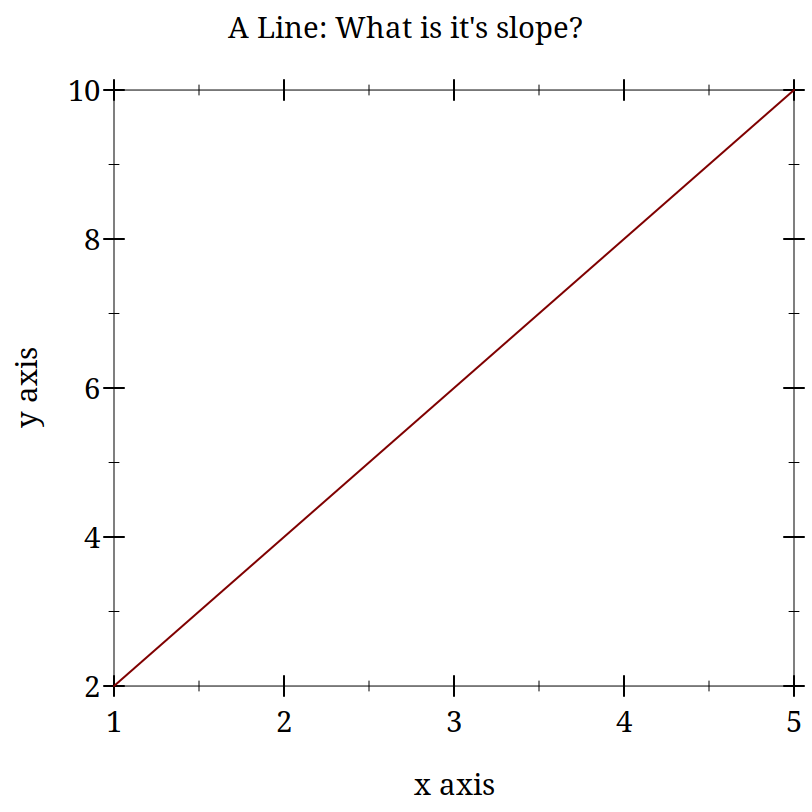
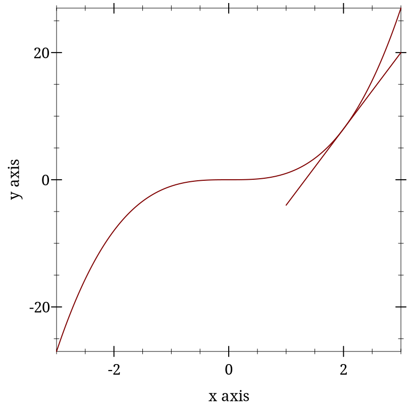
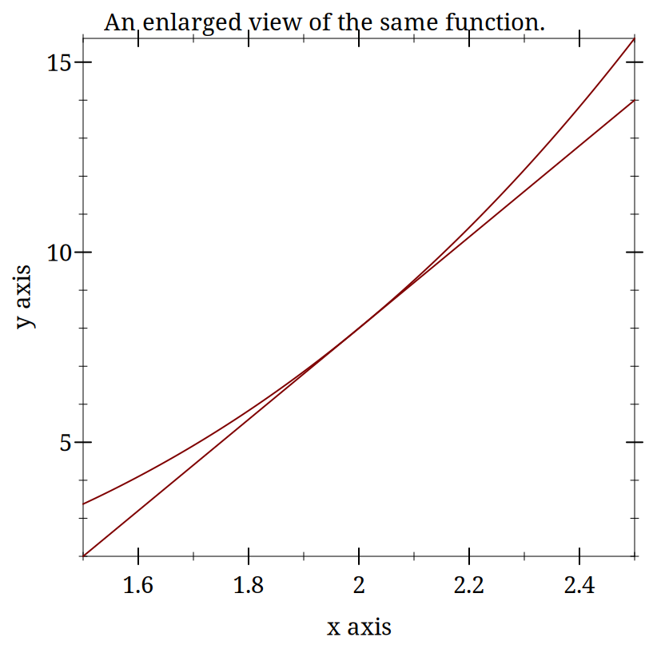
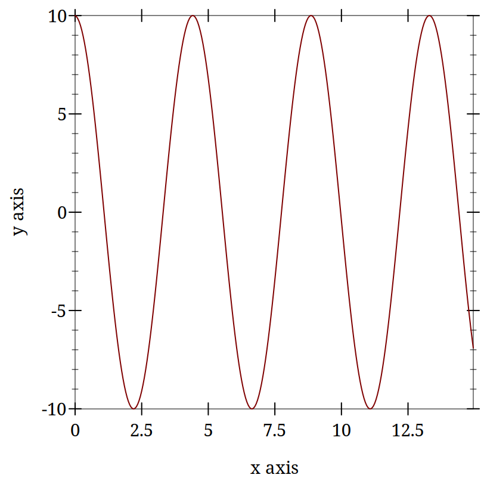
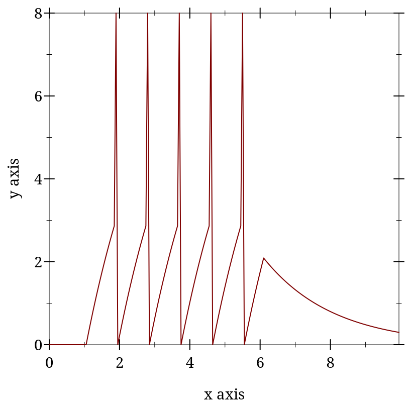
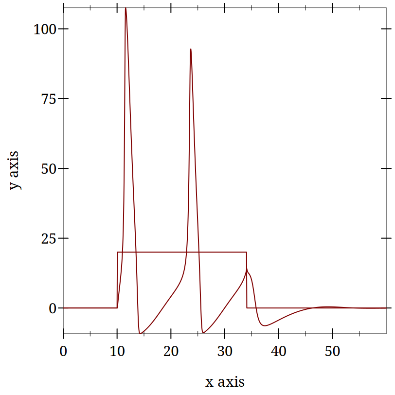

3 Differential Equations and Spiking Neuron Models
3.1 Differential Equations and Spiking Neuron Models
3.1.1 Goals
Why are Differential Equations an important technique for computational modelling in psychology and neuroscience?
Work on the modeling of the action potential eventually resulted in Nobel Prizes. The Hodgkin-Huxley equations that resulted from this work are differential equations. Subsequent models, even very marked simplifications such as the Integrate and Fire model, are also differential equations. When you rely on a simulation software that allows you to create populations of such neurons you are using, at least indirectly, a differential equation. It is worth knowing what they are.
Exponentials show up a lot in neuroscience and psychology. When you see a rate of change in a quantity that is proportional to the magnitude of that quantity there is an exponential hidden in there somewhere.
Further, modern computers and their powers mean that we can often use differential equations in our models by naively implementing their effects as a series of very tiny steps. We might gain insight if we knew more about how to solve differential equations analytically, but often, if our goals our practical, that is running a simulation to see the result, we can be ignorant of differential equations at that level, and just deploy them as another practical tool. Just like you can now use software to implement Monte Carlo simulations in statistics without knowing the full details of the theory mathematically.
This gives us the following goals for this section:
Learn what a Differential Equation is as a mathematical entity,
Get an intuition for differential equations by thinking of them as slopes,
Learn how they emerge as a natural effort to account for changing quantities in neuroscience and psychology,
Put this altogether by writing programs to implement the integrate and fire point neuron model and a version of the Hodgkin-Huxley neuron model.
In preparation for things to come you might try to remember (or look up) what is the integral of one over x? In symbols, what is \int \frac{1}{x}~ dx?
3.1.2 The Action Potential - a very short review
Our goal is to use differential equations in code written to simulate spiking neurons. Therefore, we ought to remind ourselves about the basics of what is a neuronal action potential.
What are the axes?
What ion causes the upward deflection?
What causes the repolarization?
Who discovered the action potential?
Who won the Nobel Prize for characterizing the ionic events of the action potential experimentally and building a mathematical model?
Did you draw this?
An aside: Notation
Mathematics is full of notation. And one person’s notation is another person’s jargon. The key thing is not to let yourself be scared off. Often the motivation for mathematical notation is just convenience: condensing something that would take a long time to say or write into an abbreviated form. It is the equivalent of saying "meh" or "lol". Mathematical notation is just a technical emoji. You probably know the mathematical idea that is being represented; you just don’t know the abbreviation that is being used. So, just like you can teach granma the meaning of TMI you can with a little bit of practice get used to the Greek symbols that appear so often in mathematical presentations.
As a first exercise, write out in long hand what is meant by the following:
3.1.2.1 Multiple Ways to Say the Same Thing
Another thing to note about mathematical notation is that it often provides more than one way to say the same thing. Which notation is used depends on context and the technical community the work is intended for. Computer scientists frequently use i as a variable for indexing a loop. To the mathematician it is the complex part of an imaginary number i~=~\sqrt{-1}, but engineers use j instead. Here are some of the many different ways you may see the derivative depicted.
Leibniz notation: \frac{dx}{dt}
Physicists often use this for derivatives with respect to time (t): \dot{x}
Mathematicians often use the variable itself as a representation for the function and use the number of "primes" to indicate how many derivatives to take: x’
Or they may make the variable representing the function explicit if they think that will make their reasoning clearer in the present context: f’(x)
This is called operator notation. You won’t see it as much, but when doing certain kinds of proofs or reasoning more abstractly it can be much more convenient: D~f
3.1.3 Derivatives are Slopes
There may be many ways to write out the notation for a derivative, but the uniting concept behind them is as "rates of change." They are essentially just the slopes you learned about in secondary school. The old "rise over run" where the length of the run is made very, very small.
You might want to pause here and make sure you remember what a slope is.
Can you write the equation to find the slope of a line?
How would you apply this to a curve and not a line?
When in doubt return to definition. What is the definition of a slope of a function?
3.1.3.1 Use your computer as a tool for exploration
Demonstrating something mathematically can give a great deal of satisfaction and ultimately is the guarantor of whether something is correct. Often we want to know more than whether something is correct in the abstract, we want to see specific examples. Sometimes pencil and paper are the best approach, but often we can do the same thing more quickly and more extensively by using our computer. Let’s digress to use our computer for visualizing ideas about slopes. You should try to get these to work in Dr. Racket.
> (begin (define xs (list 1 2 3 4 5)) (define ys (list 2 4 6 8 10)) (plot (lines (map vector xs ys)) #:title "A Line: What is it's slope?")) 
> (plot (list (function (lambda (x) (expt x 3)) (- 3) 3) (function (lambda (x) (- (* 12 x) 16)) 1 3)) #:title "A curve (of what?) showing the slope at a point.") 

Derivatives are Instantaneous Slopes
These plots are intended to demonstrate the idea that locally everything is linear. If you calculate the slope for your curve exactly like you do for a line you will get something that starts to look more and more like a line the smaller your "run" gets. The idea is that you pick two points that are "close enough" and your derivative becomes "close enough." At least with a computer. Mathematically, you just keep going to the limit.
3.1.4 Using Derivatives to Solve Problems With a Computer
3.1.4.1 What is the square root of 128?
We want to know the value of x that makes 128 =x^2 true?
Always use the computer for the busy work when you can. Your computer can solve many mathematical problems for you. For example, requiring symalg we can programatically find that the derivative of x^2 is 2 x. Look at the code for this margin-note and you will see how I computed that with racket (and then typeset it).
Come up with a guess.
Calculate the error.
Adjust your guess based on the error.
This adjustment will use the derivative.
3.1.4.1.1 Working Through an Example
Let’s say we want to solve for x when x^2 = 128. How might we start? When in doubt, guess!
How much is your guess off?
What we want to do now is adjust our guess. Since we know how much our function changes its output for each adjustment in the input, How do we know this? Our derivative is a rate of change. we can revise our guess based on this necessary adjustment. If we are still wrong, we just repeat the process.
To get there let us consider representing the ratio of how our function’s output changes for changes in input. We can just make things concrete.
If you take a look at the definition of the derivative (equation D) above you will see the resemblance, except for the absence of the limit. When trying to solve this problem we don’t initially know both inputs, but we do know that when we put in the solution to our problem we will get 128. And we also know that we can compute the derivative. A bit of rearranging and renaming give us.Can you map the steps I took to get this equation from the one above?
The equation of a frictionless spring is:
where ’s’ refers to space, ’t’ refers to time, and ’P’ is a constant, often called the spring constant, that indicates how stiff or springy the spring is.
Imagine that we knew this derivative. It would tell us how much space the spring head would move for a given, very small, increment of time. We could then just add this to our current position to get the new position and repeat. This method of using a derivative to iterate forward is sometimes called the Euler method.
Returning to our definition of the derivative:
But our spring equation is not given in terms of the velocity it is given in terms of the acceleration which is the second derivative. Therefore, to find our new position we need the velocity, but we only have the acceleration. However, if we knew the acceleration and the velocity we could use that to calculate the new velocity. Unfortunately we don’t know the velocity, unless ... , maybe we could just assume something. Let’s say it is zero because we have started our process where we have stretched the spring, and are holding it, just before letting it go.
How will our velocity change with time?
And we have a formula for this. We can now bootstrap our simulation.
Note the similiarity of the two functions. You could write a helper function that was generic to this pattern of old value + rate of change times the time step, and just used the pertinent values.
How do we know the formula for acceleration? We were given it in Equation S above.
> (require "./code/spring.rkt")
> (begin (define spring-results (release-spring)) (plot (lines (map vector (map fourth spring-results) (map third spring-results))))) 
3.1.4.2 Damped Oscillators
Provide the code for the damped oscillator. It has the formula of
This should really only need to change a couple of lines to update the model to be able to handle the damped version as well. You might want to edit spring.rkt.
3.2 Integrate and Fire Neuron
In this section we take a look at the history and math of the computational model of neuron firing called "Integrate and Fire" (I&F). The I&F model uses math essentially the same as the spring example.
Is the integrate and fire model used much in modeling in the present time.? Answer.
3.2.1 History of the Integrate and Fire Model
3.2.1.1 Louis Lapicque - Earlier Computational Neuroscientist
Modern Commentary on Lapique’s Neuron Model

Original Lapique Paper (scanned; pdf)
Brief Biographical Details of Lapicque.
3.2.1.2 Lord Adrian and the All-or-None Action Potential
One of the first demonstrations of the all-or-none nature of the neuronal action potential was made by Lord Adrian. Lord Adrian was an interesting scientific figure how asserted that some of his prowess at electrophysiology stemmed from his interest in and training in fencing.
When was the action potential demonstrated?
What was the experimental animal used by Adrian?
Want more details? There is an excellent free book available Spiking Neurons. They also have another more modern book out too Neuronal Dynamics.
3.2.2 The Integrate and Fire Equation
While Hodgkin and Huxley provided the first robust computational model of the neuronal action potential there model is quite complex, as we will soon see. Is all that complexity necessary? That of course depends on the nature of the scientific question, and if we are primarily intersted in whether a spike has or has not occured, and not the ionic events that produced the spike, we may find our experimental questions dealt with much more concisely by a much simpler model of neuronal spiking: the leaky integrate and fire model.
The formula for the leaky integrate and fire neuron is:
In the next sections we will describe how this simplification came to be, and use it as the basis for learning some of the elementary electrical laws and relations upon which it is based.
3.2.2.1 Electronics Background
The following questions are the ones we need answers to to derive our integrte and fire model.
What is Ohm’s Law?
What is Kirchoff’s Point Rule?
What is Capacitance?
What is the relation between current and capacitance?
3.2.2.2 Formula Discussion Questions
To understand our formula clearly we should review the meaning of the key symbols and notation.
What does \frac{dV}{dt} mean?
What does \frac{1}{\tau} mean?
Why does the voltage term on the right have a negative sign?
What is I(t)?
To derive our equation we need to put all these fact together.
We recall that just like we used the derivative to help us figure out where the spring would be some small increment of time into the future, we use the same approach to compute our future voltage. That future voltage will also include a term that reflects an additional current that we have "experimentally" injected.
Can you tell why, looking at the integrate and fire equation, if we don’t reach the firing threshold, we see an exponential decay?
Deriving the IandF Equation
a: Kirchoff’s point rule,
b: the relationship between current, charge, and their derivatives
c: Ohm’s law
d:multiply through by R
e: rearrange and define \tau
3.2.2.3 Coding up the Integrate and Fire Neuron
Most of the integrate and fire implementation is conceptually and practically identical to the spring example. You assume a starting voltate (initial state) and then you update that voltage using the differential equation for how voltage changes with time (\frac{dV}{dt}).
There is one critical difference though. Unlike real neurons the Integrate and Fire neuron model does not have a natural threshold and spiking behavior. You pick a threshold and everyone time your voltage reaches that threshold you designate a spike and reset the voltage.
What I added below is a strictly cosmetic amendment that changes the first value after the threshold to a number much higher than the threshold so that when plotted it creates the visual appearance of a spike.
3.2.2.3.1 Class Exercise: Adding a refractory period to the Integrate and Fire model
What is the refractory period for a neuron?
In class make sure you can get the integrate and fire model working in Dr. Racket. After you get the basic model working trying altering the input current to see how that affects the number of spikes and the regularity of their spiking.
Next, change the form of the input current to be something other than a constant. I suggest trying a sine wave. This will give you a chance to sample some of racket’s potential.
Find out how to take the sin of a number. Then learn how to map the sin function over a list of numbers. If you use in-range you can create a stream of numbers from a minimum to a maximun for a given step size. Then you may want to shift up or scale all the numbers to make them non-zero. This could be done by mapping again. The map function is very powerful and allows you to avoid writing a lot of lengthy looping code.
After you have done that edit the code to include a refractory period. First, decide on the logic of how to do this and only after that start editing the code to implement it.
The next examples walk through the code and describe some of the ideas.
(define dt 0.05) (define max-t 10) (define init-t 0.0) (define start-time 1.0) (define stop-time 6.0) (define cap 1) (define res 2) (define threshold 3.0) (define spike-display 8.0) (define init-v 0.0) (define voltage init-v) (define injection-current 4.3) (define injection-time (cons start-time stop-time)) (define tau (* res cap))
This is a good habit to develop with your code. Do not "hard code" in values for variables that you will have to write in multiple locations in a file. It makes it hard to update and debug your code. Give sensible and short names to things you will use in your code. Then define values for those at the top of your code. This gives you one place to look for explanations and reminders, and also gives you a place where when you make a single change it will propagate through your code.
(define (update old-value rate-of-change time-step) (+ (* rate-of-change time-step) old-value))
This is the same updating rule that we used in the spring example. It is a rewriting of the definition of the derivative. This is sometimes referred to as Euler’s method.
(define (dv-dt localres locali localv) (* (/ 1 tau) (- (* localres locali) localv)))
(define (between x #:lower [lower (car injection-time)] #:upper [upper (cdr injection-time)] #:if-true [if-true injection-current] #:if-false [if-false 0.0]) (if (and (>= x lower) (<= x upper)) if-true if-false))
(define (voltage-choice curr-volt spike-status #:thr [thr threshold] #:sd [sd spike-display]) (cond ((and (> curr-volt thr) (not spike-status)) sd) (spike-status #i0.0) (#t curr-volt)))
Just as we were given the equation for a spring, here we are given the equation for the I&F neuron, which we translate from math to code. In addition, I created some smaller "helper" functions. I like a style that gives my functions default values. Then I don’t have to enter so many arguments when I call the function. This, of course, only makes sense if there are values which you input to your function and that rarely change. I also find it convenient to use a style where I have keywords for my functions. Then I can change the order that I enter things. It does make my code longer, because I have to type the keywords when specifying the input to my functions. This is what I am doing with the lines that look like: #:if-false [if-false 0.0]
It would be possible to collapse all this into one big function, but that would be harder for me to understand, and harder for you to understand. In general, try to write short little functions that do one thing. Then you can chain those small functions together to accomplish the larger task.
(define (run-iandf-sim #:tolerance [tolerance 0.1] #:max-time [max-time 10] #:max-iter [max-iter 10000]) (for*/fold ([t 0] [i 0] [v 0] [accum '()] #:result (reverse accum)) ([n (in-range max-iter)]) #:break (> t max-time) (let ([spike (< (abs (- v spike-display)) tolerance)]) (values (+ dt t) (between t) (voltage-choice (update v (dv-dt res i v) dt) spike) (cons (list t i v) accum)))))
> (require "./code/iandf.rkt")
> (begin (define iandf-results (run-iandf-sim #:max-time 10.0)) (plot (lines (map vector (map first iandf-results) (map third iandf-results))))) 
Though things may look more complex than the spring example, it is because I have so many more local variables to define. The basic flow is still just a loop.
Visualizations can be essential in helping you to see and understand the function of your computational program. Thus, while it is only cosmetic, I find the addition of the apparent spike helps me to see what the output of my simulation is. In another context, e.g. if were only counting spikes this decorative element would be un-needed complexity.
3.2.3 Integrate and Fire Homework
The Integrate and Fire homework has two components. One practical and one theoretical.
Practically, submit an integrate and fire racket program that alters mine in some meaningful way. You might change the plot or the type of current input. You might examine how the results depends on the size of the time step used. Just something to show that you can edit code and keep it working.
Theoretically, look at this article (pdf) and tell me how you feel our integrate and fire model compares to these actual real world spiking data when both are give constant input. What are the implications for using the integrate and fire model as a model of neuronal function?
3.3 Hodgkin and Huxley Model of the Action Potential
3.3.1 Background and Motivation
Hodgkin and Huxley, the people as well as their model, provide a nice example for how to structure one’s education to enable one to do work that combines mathematics, models, and empirical data. Each was a scientist from one side of the aisle who sought training from the other.
Another lesson taught by the Hodgkin and Huxley model is a meta lesson: you may not understand in the beginning what your true problem even is. You need to be prepared for it to appear, and when it does to be able to attack it with the methods appropriate to its nature. Rather than being the man with a hammer and seeing everything as a nail, you need to carry a Swiss Army knife.
3.3.1.1 Biographical Sources
To learn more about these remarkable individuals and their careers you can consult the biographies of the Nobel Foundation. The Nobel Prize organization keeps biographies of all recipients Hodgkin, Huxley.
This article (pdf) is a nice summary of the work done by Hodgkin and Huxley. You might look for how long it took Huxley to calculate his simulation of one action potential numerically using essentially the same method we will be using. Compare how long it takes you to how long it took him.
3.3.1.2 Model Description (detailed)
I will not be describing the Hodgkin and Huxley model in detail as there are many other sources that do an excellent job and are online and freely available. One recommended source is Gersnter’s book’s chapter. Gerstner goes into more detail than I do. If you have problems getting things to work, or just want a more detailed mathematical explanation this is an excellent resource.
3.3.1.3 Comments and Steps in Coding the Hodgkin Huxley Model
Some introductory reminders and admonitions:
The current going in to the cell is intended to represent what an electrophysiologist would inject in their laboratory setting, or what might be changed by the input from other neurons. The total current coming out of the neuron is the sum of the capacitance (due to the lipid bilayer), and the resistance (due to the ion channels). This is Kirchoff’s rule implemented in the Hodgkin and Huxley model.
Recall that in the Integrate and Fire model we lumped all our ionic events together into one term:
The Hodgkin and Huxley model is basically the same as the Integrate and Fire model. What differs is that total conductance is decomposed into three parts where we have a resistance for each ion channel. The rule for currents in parallel is to apply Kirchoff’s and Ohm’s laws realizing that they all experience the same voltage, thus the currents sum. The Hodgkin and Huxley model has components for Sodium (Na), Potassium (K), and negative anions (still lumped as "leak" l).
By the same logic as for the integrate land fire I_C = c~\frac{dV}{dt}.
If you rearrange terms you can get the \frac{dV}{dt} on one side of the equation by itself.
3.3.1.3.1 Test your understanding
You cannot program what you don’t understand. A major headache in any programming task comes from starting to write your code too soon. Your time to completion will often be shorter if you delay starting the writing of your code until you can confirm a solid understanding of the intent of your code and the flow of the algorithm you are implementing. It is a mistake to think that programming will bring understanding. Programming may bring you new insights or help you extend your understanding, but it cannot turn a confused implementation into a working one. Sometimes you think you understand something, and in the act of coding you find that you really do not. Or else that there are elements of the original problem that were under specified. At this point you should stop writing code, and go back to the blackboard to work through what it is you are trying to do. Make your coding about implementing an idea. Do not expect it to deliver the idea.
So, in that light, and before you start coding, ask yourself,
What are the \bar{g}_* terms?
What are the E_{*} terms?
What do m,n, and h represent?
Where did these equations come from?
3.3.1.4 It’s Differential Equations All the Way Down
Although the Hodgkin and Huxley model uses the same mathematics as the Integrate and Fire model, and we will use the same Euler’s method to step forward and calculate model terms that evolve over time, this model is more complex in two ways that make the coding more intricate. First, it has multiple derivatives and derivatives at multiple levels. Each of the m, n, and h terms are also changing and regulated by a differential equation. They are dependent on voltage. For example,
Each of the m,n, and h terms have their own equation of exactly the same form, but with their unique alphas and betas (that is what the subscript means).
What does the V in parentheses mean?
When they were finally sequenced (decades later), what do you think was the number of sub-units that the sodium and potassium channels were found to have?
3.3.1.5 Getting Started
You will need to make some assumptions to get your initial conditions.
If you allow t \rightarrow \infty \mbox{, then } \frac{dV}{dt}=?
You assume that it goes to zero; that is, you reach steady state. Then you can solve for some of the constants.
Where do the constants come from?
They come from experiments, and you use what you are given.
Assume the following constants - they are set to assume a resting potential of zero (instead of what and why doesn’t this matter)?
These constants also work out to enforce a capacitance of 1
3.3.1.5.1 Constants
Constant |
| Value |
ena |
| 115 |
gna |
| 120 |
ek |
| -12 |
gk |
| 36 |
el |
| 10.6 |
gl |
| 0.3 |
WARNING These constants are adjusted to make the resting potential 0 and the capacitance 1.0. If you want your model to have a biological resting potential you will need to adjust these values, but when you think about it the scale is rather arbitrary. What does water freeze at 0 or -32? Well it depends on the scale: centigrade or fahrenheit. Same for neurons. Why not use a scale that makes the math simpler. Focus on the relative behavior not some absolute, and rather arbitrary, numbers.
3.3.1.6 Alpha and Beta Formulas
\alpha_{n}(V_{m})={\frac {0.01(10-V_l{m})}{\exp {\big (}{\frac{10-V_{m}}{10}}{\big )}-1}}
\alpha_{m}(V_{m})={\frac {0.1(25-V_{lm})}{\exp {\big (}{\frac {25-V_{m}}{10}}{\big )}-1}}
\alpha _{h}(V_{m})=0.07\exp {\bigg (l}{\frac {-V_{m}}{20}}{\bigg )}
\beta _{n}(V_{m})=0.125\exp {\bigg (l}{\frac {-V_{m}}{80}}{\bigg )}
\beta _{m}(V_{m})=4\exp {\bigg (}{\frac {-V_{m}}{18}}{\bigg )}
Programming Concept: Hash Tables. Often when writing a more complex program you will have collections of values that go together conceptually. If you declare each as its own variable your functions that need the entire collection can require very long strings of arguments. It is often convenient to group such variables into a collection type recognized by your programming language. Python dictionaries are one approach. R and other languages may make it easier to use objects. In this instance I am using a Racket hash table. I provide a name and a value and then an overall name for the table of name-value pairs.
(define neuron-details (hash 'dt 0.05 'init-t 0.0 'start-time 10.0 'stop-time 34.05 'cap 1.0 'init-v 0.0 'injection-current 20.0 'ena 115.0 'gna 120.0 'ek -12.0 'gk 36.0 'el 10.6 'gl 0.3))
(define (alpha-n volt) (/ (- 0.1 (* 0.01 volt)) (- (exp (- 1 (* 0.1 volt))) 1.0)))
(define (alpha-m volt) (/ (- 2.5 (* 0.1 volt)) (- (exp (- 2.5 (* 0.1 volt))) 1.0)))
(define (alpha-h volt) (* 0.07 (exp (/ (* -1.0 volt) 20.0))))
(define (beta-n volt) (* 0.125 (exp (/ (* -1.0 volt) 80.0))))
(define (beta-m volt) (* 4.0 (exp (/ (* -1.0 volt) 18.0))))
(define (beta-h volt) (/ 1.0 (+ (exp (- 3.0 (* 0.1 volt))) 1.0)))
(define (m-dot volt m) (- (* (alpha-m volt) (- 1 m)) (* (beta-m volt) m)))
(define (n-dot volt n) (- (* (alpha-n volt) (- 1 n)) (* (beta-n volt) n)))
(define (h-dot volt h) (- (* (alpha-h volt) (- 1 h)) (* (beta-h volt) h)))
(define (m-infinity volt) (/ (alpha-m volt) (+ (alpha-m volt) (beta-m volt))))
(define (n-infinity volt) (/ (alpha-n volt) (+ (alpha-n volt) (beta-n volt))))
(define (h-infinity volt) (/ (alpha-h volt) (+ (alpha-h volt) (beta-h volt))))
(define (between x nps) (let ([lower (hash-ref nps 'start-time)] [upper (hash-ref nps 'stop-time)] [if-true (hash-ref nps 'injection-current)] [if-false 0.0]) (if (and (>= x lower) (<= x upper)) if-true if-false)))
3.3.1.7 Updating the Voltage
Look back at the \frac{dv}{dt} formula for the Integrate and Fire equation and try to see the similarities. Although this function looks more complex it is still the basic Euler Method we used from the Integrate and Fire model. In fact, if you look at the source code for the update function you will see it is literally the one from the Integrate and Fire model.
(define (dvdt voltage-now curr-in hh-m hh-n hh-h neuron-parameters) (let ([ena (hash-ref neuron-parameters'ena)] [gna (hash-ref neuron-parameters'gna)] [ek (hash-ref neuron-parameters 'ek)] [gk (hash-ref neuron-parameters'gk)] [el (hash-ref neuron-parameters'el)] [gl (hash-ref neuron-parameters'gl)]) (- curr-in (+ (* gna (expt hh-m 3.0) hh-h (- voltage-now ena)) (* gk (expt hh-n 4.0) (- voltage-now ek)) (* gl (- voltage-now el))))))
Note that the looping construct we have been frequently using, the for*/fold, has an * in it. This means that later accumulator values can be declared dependent on ones that come before. This is not the case for for/fold, which declare the accumulators in parallel.
(define (run-hh-sim nps #:max-time (max-time 60.0) #:max-iter (max-iter 50000)) (let ([dt (hash-ref nps 'dt)] [init-v (hash-ref nps 'init-v)]) (for*/fold ([t (hash-ref nps 'init-t)] [hh-m (m-infinity init-v)] [hh-n (n-infinity init-v)] [hh-h (h-infinity init-v)] [i 0.0] [v init-v] [accum '()] #:result (reverse accum)) ([n (in-range max-iter)]) #:break (> t max-time) (values (+ t dt) (update hh-m (m-dot v hh-m) dt) (update hh-n (n-dot v hh-n) dt) (update hh-h (h-dot v hh-h) dt) (between t nps) (update v (dvdt v i hh-m hh-n hh-h nps) dt) (cons (list t i v) accum)))))
3.3.1.7.1 Demonstrating the Hodgkin-Huxley Model
(begin (require "./code/handh.rkt") (define run (run-hh-sim neuron-details)))
(plot (list (lines (map vector (map first run) (map second run))) (lines (map vector (map first run) (map third run))))) 
3.3.1.8 Hodgkin and Huxley Homework
I have given you code for this neuron in handh.rkt. Your homework will require you to modify this code and generate example plots of the output. You may find this harder than prior homeworks. Start sooner to see how it goes.
You will need to submit a scribble file. It should have a title, your name, and text describing each plot. You should provide at least two plots. You will need to adapt the model to fit this paper (Hafez and Gottschalk 2020). These authors analyzed a series of inherited channelopathies (where ion channels are altered due to mutation) via simulation. In these conditions empirical measurements had been made on actual patients. The authors adapted the Hodgkin and Huxley model to permit them to explore the effects of such altered conductance on neuronal excitability. For this home work you will need to adapt the n equation to be as follows:
Then you must select one of the sets of \gamma from their Table 1 and plot the neuronal activity.
To start implement the new n channel and set all the \gammas to 1. This should work exactly like the old model. Generate a plot showing that it does. For the second plot generate the same plot with your altered \gamma values.
To ease your transition to scribble I will accept it if you generate the plots as pngs in Dr Racket and then load them as images in your scribble document. For the submission give me the scrbl file, the image files, and the html output you generated (the .html file).
Hodgkin-Huxley References
Omar A. Hafez and Allan Gottschalk. Altered Neuronal Excitability in a Hodgkin-Huxley Model Incorporating Channelopathies of the Delayed Rectifier Potassium Channel. Journal of Computational Neuroscience 48, pp. 377–386, 2020. http://dx.doi.org/10.1007/s10827-020-00766-1 |
3.4 Morris Lecar Model
3.4.1 Work in Progress
This section is a work in progress.
I want to discuss the benefits of simplifying models as well as show the use of direction plots and phase space diagrams.
At the moment I have working racket code, but I have not written up this section yet. I am adding this section now (Oct 2022) to have a way to make the code discoverable.